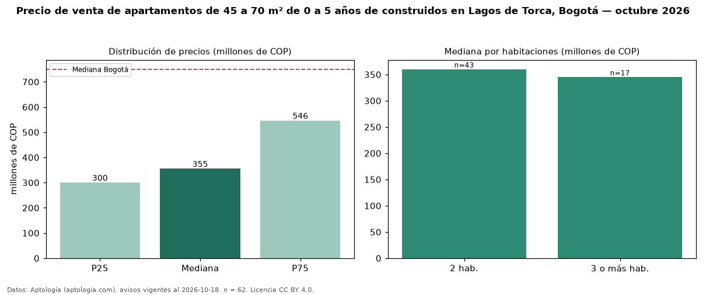

Precio de venta de apartamentos de 45 a 70 m² de 0 a 5 años de construidos en Lagos de Torca, Bogotá — octubre 2026
En Lagos de Torca (localidad de Suba), Bogotá, la mediana de precio de venta de apartamentos de 45 a 70 m² de 0 a 5 años de construidos es COP 355 millones, según 62 avisos vigentes. Eso es 3 % menos que la mediana de los apartamentos de 45 a 70 m² en venta de Lagos de Torca (COP 368 millones, n = 80); este segmento reúne el 78 % de esos avisos. Por metro cuadrado, la mediana es COP 6,99 millones/m² (n = 62), 8 % por debajo de los apartamentos de 45 a 70 m² en venta de Lagos de Torca (COP 7,57 millones/m²). El área mediana anunciada es 58 m². El segmento con más oferta es el de 2 habitaciones (43 avisos, mediana COP 360 millones); pasar de 2 habitaciones a 3 o más habitaciones cambia la mediana −4 %. La administración mediana declarada es COP 269.000 al mes (n = 51). La mitad central de los avisos va de COP 300 millones a COP 546 millones (razón 1,8), una dispersión moderada. El estrato más frecuente es 4 (57 % de los avisos con estrato). Datos: Aptología (aptologia.com), CC BY 4.0 — https://www.aptologia.com/venta/bogota/lagos-de-torca. Archivos: PDF, CSV con las cifras y gráfica PNG.

| Avisos únicos | 62 |
|---|---|
| Percentil 25 | COP 300.000.000 |
| Mediana | COP 355.000.000 |
| Percentil 75 | COP 546.200.000 |
| Mediana por m² | COP 6.988.899 |
Fuente: avisos vigentes de portales inmobiliarios recopilados por Aptología, deduplicados (mínimo 30 avisos únicos por celda). Precios pedidos, no cerrados. Fecha: 2026-10-18.